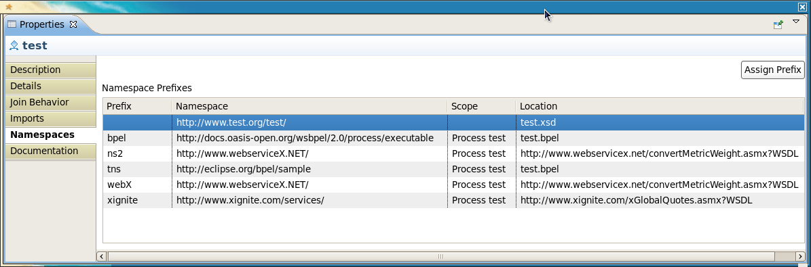

General |
|
| BPEL Editor | The following issues were fixed.
JBIDE-6609 Support for BPELInvoke action JBIDE-6613 Can't create ODE Deployment Descriptor JBIDE-6617 BPEL Editor can not deploy second version of process definition JBIDE-6697 Merge Eclipse BPEL project fixes into JBoss Tools BPEL component JBIDE-6784 BPEL Editor can not deploy second version of process definition JBIDE-6785 "Partner Link Type" Chooser will not open after deleting a resource WSDL from bpelContent folder JBIDE-6786 ODE deployment descriptor editor is unable to find associated port for partner link JBIDE-6736 "BPEL" eclipse perspective JBIDE-6766 Unable to create BPEL correlation property using a wizard JBIDE-6825 BPEL Validator throws NPE when saving an unrelated BPEL process |
| BPEL Perspective | A new Eclipse IDE Perspective has been added for BPEL development and deployment. See JBIDE-6736. |
Editor |
|
| Namespaces Property Tab | A new Property Sheet Tab has been added for the Process and Activities. This tab displays a list of all namespaces and namespace prefixes that are in-scope. Missing namespace prefixes can also be assigned here. See JBIDE-6765 for details.  |